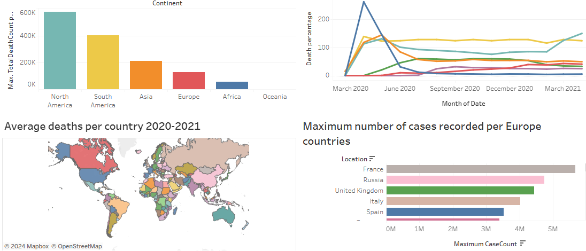
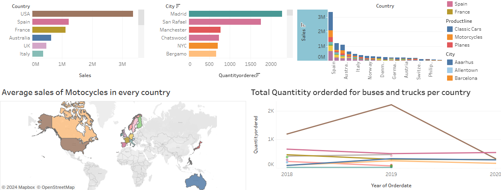
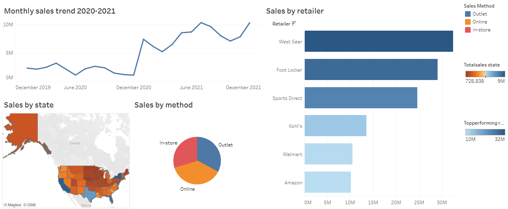

Hello, I'm Rene, a dedicated data analyst passionate about transforming raw data into actionable insights.
With a keen eye for detail and proficiency in data interpretation,
I excel in uncovering meaningful patterns that drive informed decision-making.

This SQL project delves into the intricate details of the COVID-19 dataset, providing valuable insights and facilitating a comprehensive understanding of the pandemic's impact.

In this project I created a dashboard to better summarize and present the findings from the dataset
This project Python project offers a clear analysis of the titanic ship concentrating on data of people who were abroad the ship.

This Tableau dashboard provide a summarized presentation of different aspect from the automobile dataset
My latest project analyzing Adidas sales in the US for the years 2020 and 2021

Tableau dashboard showcasing trends in Adiddas sales in the US